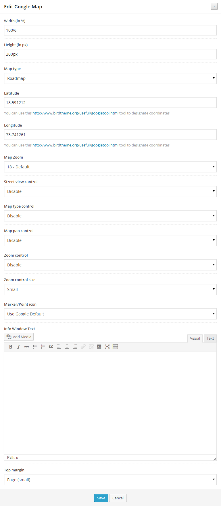

Ultimate Visual Composer Addons
Extend Visual Composer and add more power to it!
Thank you for buying Ultimate Visual Composer Addons. If you have any questions or need any support, please message us through the contact form on our CodeCanyon Profile Here
Minimum Requirements
In order to get this product working flawlessly, please ensure that all the minimum requirements as specified below will be satisfied.
- Wordpress - Version 3.6 & above.
- PHP - 5.2 or above
- WPBakery Visual Composer - Version 3.7.2 & above
Installation
Installing Through Dashboard:
- Go to Plugins -> Add New -> Upload
- Choose the installable ZIP file (that you have download in your computer from codecanyon) Upload that file.
- Now, click on activate link to activate the plugin.
- Extract the installable ZIP file (that you have download in your computer from codecanyon) Upload the extracted folder into wp-content/plugins directory.
- Activate the plugin through the 'Plugins' menu in WordPress.
- Settings => Visual Composer => General Settings
- Select the appropriate user group and ensure elements you need are enabled. Only the enabled elements will come in Visual Composer Editor. Screenshot.
{kind=link}
Visual Composer Brief Introduction
Visual Composer is a basic drag and drop page builder plugin and a modeling tool that enables code-free composition of UI elements, Enterprise Services, and reusable components to rapidly create and adapt rich user interfaces on your WordPress website.
To start using Visual Composer, follow these simple steps:
- Add a new page/post or edit the existing one.
- Observe the Visual Composer button to start designing custom pages from their Frontend/Backend/Classic editor. Screenshot.
- The Visual Composer Backend Editor page will look something like this.
- Click "Add Element" to start using the elements directly or click "Add row" to define your grid structure.
{kind=link}
Using the newly Added feature of Frontend Editor:
- Visual Composer’s version 4.0 and above have a new feature of Frontend editor.
- Frontend editor lets you edit the contents directly from the webpage itself. Screenshot
- Click on the edit button against the specific element to edit its properties.
{kind=link}
For more help about Visual Composer, refer WPBakery's own documentation here.
Getting started with Ultimate Visual Composer Addons
- If you click "Add Element" in Visual Composer a jQuery popup box will appear.
- Click on "Ultimate VC Addons" which is a dedicated tab for our plugin. A list of all the elements that our plugin provides will appear. Screenshot
- Select the element that you want to use.
{kind=link}
Just Icon
You can use this element to integrate a simple icon (font / image) in your page and use it as you want by applying different set of properties those Ultimate VC addons offer. Refer examples available here.
Backend Options -

Info Box
Info Box helps you add an icon with a title and its description. We’ve designed few samples for reference here.
Backend Options -

Info List
Info List helps you to create an advanced list of multiple Icon Boxes linked together. Find some sample designs here.
Backend Options -

Flip Box
This element combines the power of "Info Box" & "Call to Action" block altogether. On the front, it would look like a normal Info Box but as visitor hovers on the block, it flips with a cool CSS3 effect and shows a Call to Action section, provoking a visitor to take an action. Refer the examples here.
Backend Options -
Counter
Counter will help you show your milestones, achievements and any other numeric statistics with animated numbers on your webpage. Refer for examples here.
Backend Options -
Interactive Banner
This element will display image blocks in a nicer & interactive way with a title & description that comes on hover. Interactive banner also allows you to apply CSS3 animation on hover. Refer for examples here.
Backend Options -

Modal Popup Box
Modal Popup Box can be used to display information in a nice popup window. You can try different possibilities of Modal Popup element here.
Backend Options –
Icon Fonts Manager
Icon Font Manager is a powerful tool that offers you a huge number of font icons to be used on your website. By default, we ship this plugin with the renowned Font Awesome library with 360 different font icons available. But if you wish to add more, you can upload** new Icon fonts or delete existing ones that you might have added already using IcoMoon.io.
**Refer our step by step video tutorial on How to add Extra Font Icons to Icon Font Manager?
How to upload new set of icons / delete existing set of icons?
In the appearance menu of WordPress, you will find a new menu "Icons Manager" as you see below
There is a real time search box available as well so you can cross check and see if you have the icon available that you are looking for. If you cannot find the icon you want to use, custom font icons can be uploaded or the existing set of icons can be deleted too.
To upload new set of icons -
- Go to IcoMoon App.
- Shortlist the icons by clicking on individual ones that you like. You have a real time search feature available as well if that makes your job easier.
- If you still can't find the icons that you want in the set, click on the link "Add Icons From Library…" at the bottom of the page where you can load more font icon libraries in your selection area where you shortlist and select your favorite icons (in step 2) Screenshot
- Once you shortlist the icons for your set, click on the button "Font" in the fixed menu at the bottom of page. Screenshot
- The page that comes after you click "Font" button in the last page is where you can review, edit and customize your selected icons.
- Once you are satisfied with your selection, find a button saying "Preferences" in the top menu. Screenshot. Give a unique name to your icon set as doing so will create a separate class in Icon Fonts Manager.
- Once you gave it a name, click the "Download" button.
- A ZIP file will be downloaded.
- Now - go back to your website's "Icons Manager" area.
- Click "Upload New Fonts" then "Upload Files" then Select the ZIP file that we downloaded from IcoMoon & upload it. Screenshot
- Finally - click "Insert Fonts Zip File" button at the right bottom and your new font will be uploaded quickly.
{kind=link}
{kind=link}
{kind=link}
**It is highly recommended to watch our step by step tutorial on How to add Extra Font Icons to Icon Font Manager?
To delete existing set of Icons -
{kind=link}
To use the newly uploaded fonts in Visual Composer -
Timeline
Would you love to have a Facebook like timeline on your website? Well, the wait has finished as this element in Ultimate VC addons lets you add content, photos, videos in a timeline format. Timeline element uses Parent Child Functionality** and thus has implicit Parent elements as well as the child elements. Once you select to add a timeline on your page, child element will have to be added. Refer this Screenshot.
{kind=link}
**Refer our video tutorial on What is the Parent Child Functionality?
Backend Options –
Insertion of Timeline can be done in two phases.
1. By adding a Parent
2. By adding its children
Parent Block Backend Options -
We have 3 child elements to Timeline Parent. Refer this Screenshot.
Timeline Child Item Backend Options -

Timeline Child Separator Backend Options -
Timeline Child Featured Item Backend Options -
Refer for output examples here.
Extended Google Maps
Visual Composer comes with Google Maps element by default. But our Extended Google Maps element uses latest APIs and allows you to do more with it. Upload marker images, write custom HTML in map info box and control everything that goes with map.
Backend Options –

Countdown
As the name says, Countdown lets you show a timer which will go on till its defined time or day or date, showing the remaining time to the visitors.
Backend Options –

Google Trends
This element uses Google Trends APIs and lets you display the data of a specific search term or a geographic location according to various parameters.
Backend Options –
Info Circle
Info Circle makes your icons to be displayed on the circumference of a circle with their respective title and descriptions within the circle. This feature uses Parent Child Functionality** offered by Ultimate VC Addons. Check for different examples and design possibilities of Info Circle.
**Refer our video tutorial on What is the Parent Child Functionality?
Backend Options –
Insertion of Info Circle can be done in two phases.
1. By adding a Parent
2. By adding its children Screenshot
{kind=link}
Info Circle Parent Block Backend Options -

Info Circle Child Element Backend Options -
Info Tables
Info Tables come with some added functionalities to Icon Box as it has a Heading with a sub-heading. Description section can be isolated with different colors. This stays the same for the icon section. Refer examples here.
Backend Options –
Price Box
Price Box is essential for a website selling a product or a service where the seller can highlight features or important factors and pricing about the product/service. Refer examples here.
Backend Options –
Spacer / Gap
As an addition to the separator that comes in default with VC, our spacer element offers a convenient option to add a custom height or gap one wishes to see between two separated sections on a webpage.
Backend Options –
Headings
As its name says, this element is helpful in creating appealing headings with numerous options and styles. This element Headings has been integrated with our Google Font Manager which allows you to use Google Web fonts of your choice. Headings can be best used with Parallax and Row Backgrounds.
Backend Options –
1) General Tab
2) Typography Tab
3) Design Tab
Google Font Manager
Google web font families are Web designers' best friends as they are open source and get deployed faster. By adding Google Font Manager to our Ultimate VC Addons, we've just brought them closer and easier to use. Now you can enhance the experience of your website visitors with web fonts available in Google library by using our Google Font Manager on your WordPress website.
Watch step-by-step guide to use our Google Font Manager on your Website.
Fonts reflected in Headings Backend